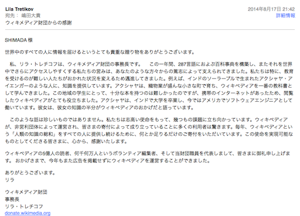

詳しくは言えないけど一方的にお世話になっている Wikipedia にしばらく寄付をしていないので、誰かから500円分なにか貰えたら1000円をウィキメディア財団 に寄付します。
ようするに、Wikipediaに500円ずつ僕と割り勘で寄付しようぜって話ですね。
※1万円とか突っ込まれても2万円寄付したりしません。
しら(@kashira2010)様より Amazonギフト券にて500円支援いただきましたので、さっそく寄付を行いました。

@shimariso IDのせて大丈夫ですよ。
もし、名前（ハンドル？）も載るなら、メールした名前より「Shira」とか「しら」の方が良いな。
ツイッターIDと並ばないなら、メールに書いた名前が載っても別に良いんだけど。
— k@shira*Z* (@kashira2010) 2014, 8月 17